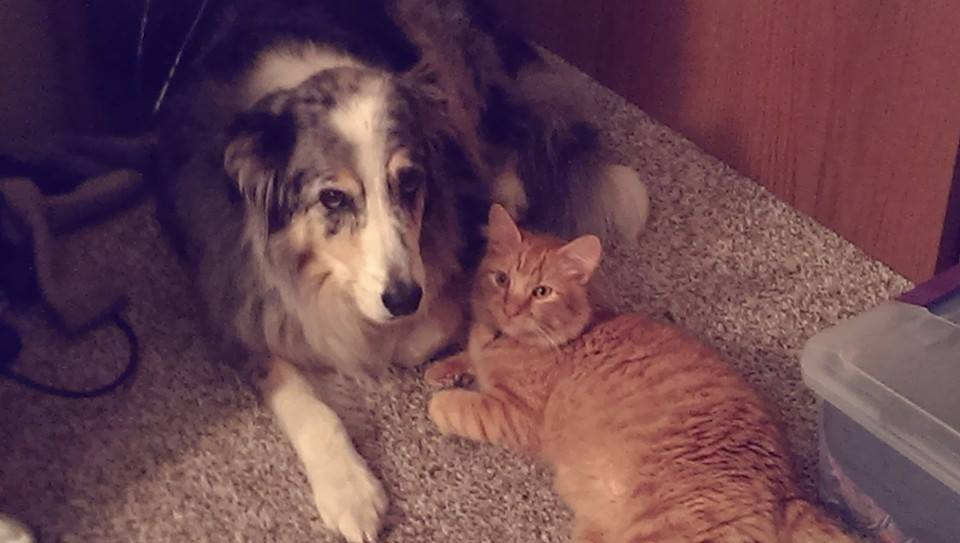
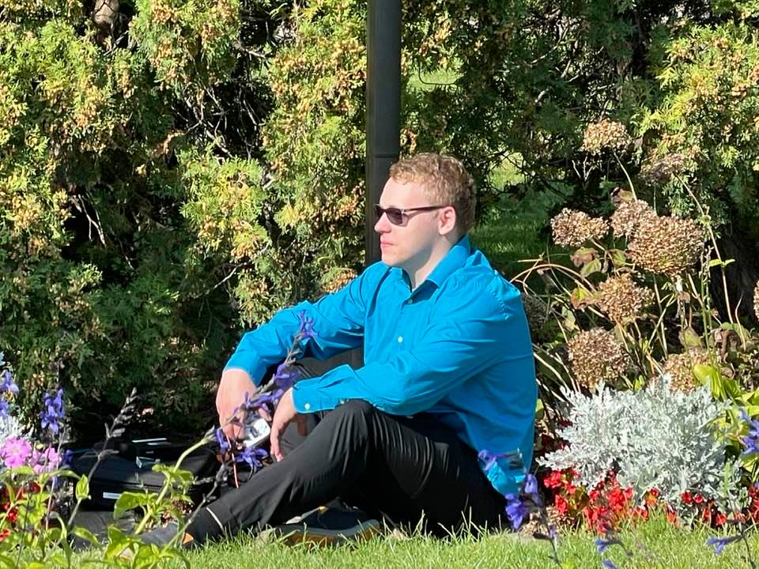

Pic of my dog Milo and my cat Otis. Unfortunately Milo passed away my freshmen year of college :(

This is a pic of me at my sister's wedding. This is the pic that the headshot is from. 

This isn't a meme this is a vid that I made for a skit during speech class in PSEO. I won't provide context.
I play a lot of Super Smash Brothers, both Melee and Ultimate. I am a Sheik main in Melee and a Wii Fit Trainer main in Ultimate.
Other games I play: League of Legends, Minecraft, MTGArena, CS:GO, Overwatch